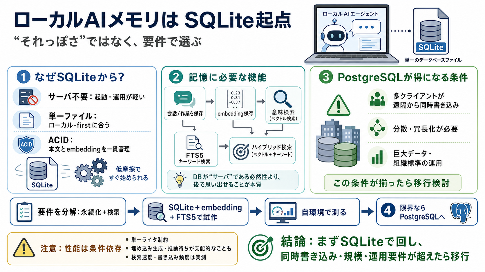

AI Agent Memory Systems Compared: RAG vs Local SQLite vs ...
# AI Agent Memory Systems Compared: RAG vs Local SQLite vs Vector DB (2026). An AI agent without memory is just a chatbo…

# AI Agent Memory Systems Compared: RAG vs Local SQLite vs Vector DB (2026). An AI agent without memory is just a chatbo…
AI Agent Memory Architecture Guide: From SQLite to Vector DBs — Pick the Right Memory Solution (2026). # AI Agent Memory…
| | | | | --- | --- | | **Hacker News**new | past | comments | <ask> | <show> | <jobs> | <submit> | login | |. | | | …
This article explores a practical approach for local-first AI tools. SQLite is a legitimate choice for embedding storage…
# How sqlite-vec Works for Storing and Querying Vector Embeddings. Vector search has become a foundational tool for mode…